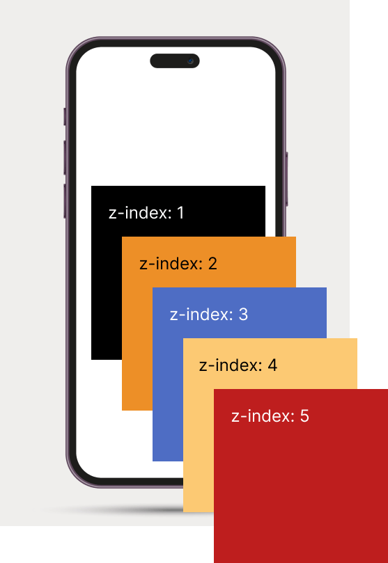

Управление стилем на уровне ОС

Лекция 6: CSS_3
Свойство box-sizing определяет, как будут вести себя размеры блока
Сброс стилей с помощью универсального селектора
* {
box-sizing: border-box;
}
CSS-свойство resize запрещает или разрешает изменение размеров textarea
textarea {
resize: none;
}
appearance - позволяет задавать внешний вид одних элементов другим элементам. Браузер будет отрисовывать элементы с учётом операционной системы и темы оформления.
input {
appearance: none; // для сброса системных стилей
}
Внешний вид радиокнопок и чекбоксов разнится в зависимости от браузера и ОС
универсальных решений не существует, но современные браузеры постепенно реализуют в стандартах и в своих продуктах новые элементы, возможности и API
Интерактивные элементы — это элементы, с которыми пользователи могут взаимодействовать
Псевдоклассы в CSS — это специальные селекторы, которые уточняют состояние или тип элемента
a:hover {
color: red;
}
Состояние :hover срабатывает, когда пользователь наводит курсор на элемент
a:hover {
color: red;
}
Состояние :focus срабатывает при клике на элемент или переходе на него с клавиатуры при помощи клавиши tab
a:focus {
color: orange;
}
Состояние :active срабатывает, когда пользователь взаимодействует с элементом, например, когда удерживает кнопку мыши на элементе
a:active {
color: black;
}
Не все пользователи используют мышь, поэтому важно, чтобы по сайту можно было перемещаться при помощи клавиатуры или других альтернативных устройств
a:hover,
a:focus,
a:active {
...
}
a:hover { ... }
a:focus { ... }
a:active { ... }
Анимация — это переход от одного состояния элемента к другому состоянию
Чтобы рассказать браузеру, с чего начать и чем закончить анимацию, используется директива @keyframes
@keyframes circle-to-square {
from {
width: 50px;
height: 50px;
background-color: #4d58f0;
}
to {
width: 200px;
height: 200px;
background-color: #309b30;
}
}
@keyframes circle-to-square {
from {
width: 50px;
height: 50px;
background-color: #4d58f0;
}
50% {
width: 50px;
height: 200px;
background-color: #82309b;
}
to {
width: 200px;
height: 200px;
background-color: #309b30;
}
}
Задает имя анимации и присваивает ее элементу, к которому она применяется
.circle {
animation-name: circle-to-square;
}
Задает длительность одного цикла анимации
.circle {
animation-name: circle-to-square;
animation-duration: 5s;
}
Задает количество повторений анимации
.circle {
animation-name: circle-to-square;
animation-duration: 5s;
animation-iteration-count: infinite;
}
Задает количество повторений анимации
Сообщает браузеру, должна ли анимация проигрываться в обратном порядке
Сообщает браузеру, должна ли анимация проигрываться в обратном порядке
.circle {
animation-name: circle-to-square;
animation-duration: 5s;
animation-iteration-count: infinite;
animation-direction: alternate;
}
Сообщает браузеру, должна ли анимация проигрываться в обратном порядке
Устанавливает, согласно какой функции времени должна происходить анимация каждого цикла между ключевыми кадрами (Demo)
.circle {
animation-name: circle-to-square;
animation-duration: 5s;
animation-iteration-count: infinite;
animation-direction: alternate;
animation-timing-function: ease-in;
}
Устанавливает, согласно какой функции времени должна происходить анимация каждого цикла между ключевыми кадрами
animation-name: square-to-circle
animation-direction: alternate-reverse;
Свойство задаёт задержку воспроизведения анимации
.square {
animation-name: square-to-circle;
animation-duration: 5s;
animation-iteration-count: infinite;
animation-direction: alternate-reverse;
animation-delay: 3s;
}
Свойство задаёт задержку воспроизведения анимации
Свойство, позволяющее ставить анимацию на паузу и запускать снова
.circle:hover,
.square:hover {
animation-play-state: paused;
}
Наведите курсор на фигуру,чтобы остановить анимацию
Сообщает браузеру, нужно ли применять стили ключевых кадров до или после проигрывания анимации
animation-fill-mode: forwards;
animation — это шорткат, в котором можно за раз указать значения для всех свойств
.circle {
animation: circle-to-square 5s infinite alternate ease-in 3s;
}
К одному элементу можно применить несколько анимаций
@keyframes shake {
from {
transform: translateX(-25px);
}
to {
transform: translateX(25px);
}
}
.circle {
animation: circle-to-square 5s infinite alternate-reverse ease-in 3s ,
shake 2s infinite alternate linear;
}
transform позволяет манипулировать элементами, изменяя их форму, размер и положение
rotate(angle) — вращает элемент на заданный угол
.elem {
transform: rotate(45deg);
}
scale(x, y) — масштабирует элемент по осям X и Y
.elem {
transform: scale(1.5);
}
translate(x, y) — позволяет вам наклонять элемент по осям X и Y
.elem {
transform: skew(20deg, 10deg);
}
translate(x, y) — перемещает элемент на заданные координаты
.elem {
transform: translate(50px, 100px);
}
.elem {
transform: translateX(50px);
transform: translateY(90px);
}
transform анимируется с помощью свойства transition или ключевых кадров (@keyframes).
.elem:hover {
transform: skew(20deg, 20deg);
transition: transform 2s;
}
transform анимируется с помощью свойства transition или ключевых кадров (@keyframes).
.elem { animation: elem-transform 4s infinite alternate; }
@keyframes elem-transform {
0% { transform: scale(1); }
50% { transform: scale(1.2); }
100% { transform: rotate(-30deg); }
}
box-suppress со значениями show, discard и hide отвязывает видимость блока от display
Находится в статусе черновика
.block {
box-suppress: hide;
}
<h2 class="visually-hidden">заголовок, которого не видно на странице</h2>
.visually-hidden {
position: absolute;
width: 1px;
height: 1px;
margin: -1px;
border: 0;
padding: 0;
white-space: nowrap;
clip-path: inset(100%);
clip: rect(0 0 0 0);
overflow: hidden;
}
CSS-свойство pointer-events позволяет контролировать события, при которых элемент может стать объектом события мыши MDN
.hidden-block {
position: absolute;
top: 0;
right: 0;
opacity: 0;
}
1. Верстка невидимого блока с появлением при наведении
.target-block:hover + .hidden-block {
opacity: 1;
transition: opacity 0.3s ease-in;
}
2. Верстка невидимого блока с появлением в состоянии фокуса
.wrap :has(button:focus) + .hidden-block {
opacity: 1;
transition: opacity 0.3s ease-in;
}
3. Верстка невидимого блока с появлением при добавлении класса с помощью JavaScript
.show {
opacity: 1;
}
<script>
let targetBtn = document.querySelector('[data-add-class="target"]');
let hiddenBlock = document.querySelector('[data-add-class="hidden"]');
targetBtn.addEventListener('click', () => {
hiddenBlock.classList.toggle('show');
});
</script>
 Designed by stories / Freepik
Designed by stories / Freepik
поток документа — это система, посредством которой элементы размещаются внутри окна просмотра браузера
Система координат в браузере аналогична плоской системе координат из школьной алгебры
top, bottom, left, и right используются вместе со свойством position чтобы указать куда именно перемещать позиционируемый элемент. Значения координат могут быть отрицательными
z-ось — воображаемая линия, которая направляется от поверхности вашего экрана к вашему лицу
Свойство position задаёт способ позиционирования элемента в документе
значение по умолчанию, элемент позиционируется в соответствии с его местом в потоке документа
.element {
position: static;
}
элемент позиционируется относительно своего исходного положения в потоке документа
.element {
position: relative;
}
элемент позиционируется относительно ближайшего родительского элемента, который имеет позиционирование, отличное от static
.element {
position: absolute;
}
элемент позиционируется относительно окна браузера
.element {
position: fixed;
}
элемент остаётся на месте при прокрутке страницы, но при этом может быть отодвинут от своей стандартной позиции
.element {
position: sticky;
}
Pixels per Inch — единица измерения плотности экранов
разработчики работают только с CSS-пикселями
1 CSS-пиксель = 1/96 дюйма или 0,26 мм или 1 физический пиксель
Ретиной называют дисплеи Apple с повышенной плотностью пикселей на квадратный дюйм
Графика должна быть подготовлена как минимум для двух вариантов экранов. Один для обычных дисплеев, второй, с увеличенным количеством пикселей — для ретины
.element {
background-image: url("../image.png");
@media (min-resolution: 2dppx) {
background-image: url("../image@2x.png");
}
}
Тег <picture> позволяет разработчикам указать несколько источников изображения для различных устройств и разрешений экрана, чтобы браузер мог выбрать подходящее изображение в зависимости от возможностей устройства пользователя
<picture>
<source srcset="image-small.jpg" media="(max-width: 768px)">
<source srcset="image-medium.jpg" media="(max-width: 1024px)">
<source srcset="image-large.jpg">
<img src="image-default.jpg" alt="Image description">
</picture>
<img
src="cat.jpg"
alt="Изображение с котом"
width="360"
height="240"
srcset="cat@1x.jpg 1x, cat@2x.jpg 2x, cat@3x.jpg 3x"
>
<picture>
<source media="(min-width: 1200px)" srcset="img/img-desktop.svg">
<source media="(min-width: 768px)" srcset="img/img-tablet.svg">
</picture>
WebP объединяет все достоинства форматов JPEG, PNG и GIF: сжатие с потерями и без потерь, поддержку прозрачности и анимации
AVIF — свободный формат сжатия с потерями качества, основанный на библиотеке для сжатия кадров AV1
WebP и AVIF — имеют неполную поддержку бразерами
VK Видео первым в России получил поддержку AV1
это процесс сжатия изображения и настройки параметров его отображения для оптимального использования
Векторная графика — способ представления графических объектов и изображений (формат описания) в компьютерной графике, основанный на математическом описании элементарных геометрических объектов, обычно называемых примитивами, таких как: точки, линии, сплайны, кривые Безье, круги, окружности, эллипсы, многоугольники
SVG (scalable vector graphics) — масштабируемая векторная графика. Используется для отрисовки:
Перед использованием SVG желательно его оптимизировать. Можно вручную удалить все ненужное или воспользоваться программой по оптимизации SVG. Наиболее известная и полезная программа для обработки SVG это SVGOMG. Она удаляет весь не нужный код
<svg width="200" height="200" viewBox="0 0 100 100">
1. способ
Самый простой способ добавить SVG на страницу — с помощью элемента <img>, который размещается прямо в HTML-коде
<img src="icon.svg" alt="" width="300px" height="200px">
2. способ
SVG как фоновая картинка в CSS
.img {
background-image: url(icon.svg);
}
3. способ
Вставить содержимое SVG-файлов прямо на страницу
<a class="link" href="#">
<svg width="100" height="100">
</a>
4. дополнительные способы
Есть два основных способа анимации SVG элемента:
Любой SVG элемент мы можем анимировать так же, как мы это делаем с HTML. Все анимации создаются с помощью @keyframes
Это подход к веб-дизайну или набор лучших практик, используемых для создания макета, который может реагировать на используемое устройство для просмотра контента
Медиавыражения позволяют нам проводить серию тестов (например, является ли экран пользователя больше, чем определённая ширина или разрешение) и выборочно применять CSS к стилю страницы соответственно с нуждами пользователя
@media [тип устройства] [характеристика устройства] {
/* CSS-правила */
}
@media print and (orientation: landscape) {
.block {
font-size: 25pt;
}
}
@media (max-resolution: 300dpi) {
.block {
font-size: 25pt;
}
}
В медиавыражении может быть перечислено несколько условий через запятую. В таком случае стили применятся для любого из указанных условий
@media (orientation: landscape), (max-width: 960px) {
.text {
color: tomato;
}
}
Часто в медиавыражениях может использоваться ключевое слово and, реже встречаются ключевые слова not и only. Если мы пишем и тип устройства, и указываем характеристики, то после типа обязательно пишется and
@media print and (min-width: 320px) {
.text {
text-decoration: underline;
}
}
Также and пишется между характеристиками
@media (min-width: 320px) and (max-width: 640px) {
.text {
text-decoration: underline;
}
}
Новые операторы <, >, >= и <= более интуитивно указывают, например, для каких размеров экрана применять правила из медиавыражения
@media (680px <= width >= 1280px) {
.text {
color: red;
}
}